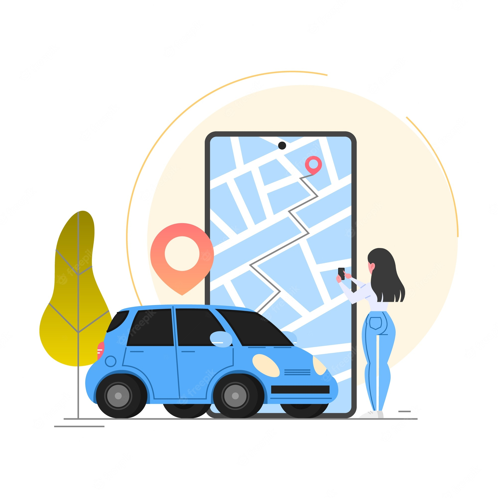

<ion-header>
  <ion-toolbar>
    <ion-button  slot="start" (click)="mostrarMenu()" expand="block" fill="clear" shape="round">
      <ion-icon slot="start" name="menu-outline" color="success" ></ion-icon>
    </ion-button>
    <ion-title>somos</ion-title>
  </ion-toolbar>
</ion-header>

<ion-content>

  <ion-card>
    <ion-card-header>
      <ion-card-title color="success" >Descubre Duber</ion-card-title>
    </ion-card-header>
    <ion-card-content>
      
      <label class="cTexto" >Duber es una aplicacion destinada a que los alumnos puedan compartir su medio de transporte con otros alumnos, esto para disminuir tiempos de transporte </label>
    </ion-card-content>
  </ion-card>

  <ion-card>
    <ion-card-header>
      <ion-card-title color="success" >Como usar Duber</ion-card-title>
    </ion-card-header>
    <ion-card-content>
      
      <label class="cTexto" >Si al momento de tu registro seleccionaste que poseias un vehiculo en el menu encontraras la opcion de crear tu ruta a indicando hacia donde te diriges, el numero de pasajeros que deseas llevar y el monto que cobraras por el trasporte.
      En cambio si marcaste que no podras ver las rutas creadas por los usuarios anteriores y ver cual te convenga mas para ponerte deacuerdo con el dueño del auto.</label>
    </ion-card-content>
  </ion-card>

</ion-content>
